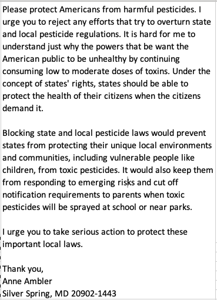

# H2A Data Analysis Project
## January 17th Updates
## Data Source
H2A Resources: [Department of Labor Foreign Labor Performance](https://www.dol.gov/agencies/eta/foreign-labor/performance)
Here we can find H-2A Disclosure_Data_FY2024-Q4
**Note:** The reporting period covers October 1, 2023 through September 30, 2024 (Fiscal Year 2024), rather than the calendar year. For detailed column descriptions, refer to the [H2A Record Layout Documentation](https://www.dol.gov/sites/dolgov/files/ETA/oflc/pdfs/H-2A_Record_Layout_FY2024_Q4.pdf).
## Data Preparation and Analysis
### 1. Initial Data Loading
- Loaded the Excel file containing H2A application data
- Performed initial data inspection
### 2. Data Overview
```python
rows, columns = df.shape
print(f"Number of rows: {rows}")
print(f"Number of columns: {columns}")
```
\
As huge amount of columns names, I choose 50 columns that I think interesting. I also filter the DataFrame based on the condition.
\
```python
new_df = df[specific_columns]
# Filter the DataFrame based on the condition
filtered_df = new_df[new_df["CASE_STATUS"] == "Determination Issued - Certification"]
```
So, the new number of rows is 16498 and the new number of columns is 51.
Since I am interested in the total workers for each state, so I group by the state and sum the total_workers_H2A_Certified. \
And I got (Ex: Total certified workers in MA this year is 499)\

\
Then I continue to find the general farm datasets. And I downloaded here(https://worldpopulationreview.com/state-rankings/farm-count-by-state)

```python
file_path = "/Users/hdjs7z/Downloads/farm-count-by-state-2024.csv"
# Use read_csv instead of read_excel
df_farmers = pd.read_csv(file_path)
# Display the first few rows
print(df_farmers.head())
```
The columns include:
'state', '**FarmCountByState_NumberOfFarms2023**', '**FarmCountByState_FarmOperations2023_Acres**', 'FarmCountByState_NumberOfFarms2022', '**FarmCountByState_NumberOfFarms_TotalSales2022_1000s**'
## Next steps:
1. Number of Famers for each state
2. Average Salary for H2A visa holders VS average salary for whole farmers for each state
3. How much acres do one person responsbile
3. Merge the datasets to one
4. Main Crops and its pesticide usage
## January 17th - January 23rd Updates
## 1. Handle H2A datasets and solve the problem discussed in last meeting

Here I loaded 7 files from 2018 to 2024(From September 30th, 2017 to October 1st, 2024)
And I did some date manipulation to extract information for 2018 to 2023 January 1st to the end of the year.

After I uploaded, I check some basic qualities of the files.
The files after 2020(including it) uses the same rules, the column name and description are almost same.
In 2018 and 2019, there are 62 columns in each file. After 2020. It has more information, it includes about 138 columns.
And some column names are different. For example, in some files, it was documented as "NBR_WORKERS_REQUESTED", but in some file, it is listed as "TOTAL_WORKERS_H2A_REQUESTED"
I group by year and see
>
## Find Farmers and Harvested Crop Datasets
In USDA, I found farmers dataset in (https://www.nass.usda.gov/Publications/AgCensus/2022/Full_Report/Volume_1,_Chapter_2_US_State_Level/st99_2_045_045.pdf)

And I collected the information including "Number_of_Produers", "Number_of_Harvested_Farms"...

## Next steps:
1. H2A workers percentage for each state
3. Dominant Crops for each state
3. Analyze revenue data.
January 24th - February 8th Updates
Create state level project(2018 -2023)
Working hours for each week - average
salary per hour - median
There are some monthly salary in the files, so I assumed 4 weeks for each month, then I calculate hourly salary
The number of H2A workers
The percentage of H2A workers
Nevada has large-scale onion farms, and onions are labor-intensive, requiring hand planting, weeding, and harvesting, which leads to high demand for seasonal labor.
Next Steps:
1. Continue to work on state-level datasets(tax, minimum salary of that state...)
2. Pesticides used in Dominant crops(reasons, texture, frequency, way...)
February 9th - Feb 22th Updates
Standard Deviation in year level and state level
Year Level
State Level
Comments Analysis
1. Comments extraction by Yuri
2. Data Cleaning(Lowercasing， Removing Punctuation，Removing Extra Spaces）
3. Unsupervised Learning exploration: "Topic Modeling", specifically "Latent Dirichlet Allocation" (LDA)
Unsupervised learning: we don't directly give the model what we want to predict, we allow the model to discover patterns and structures in the data on its own.
Topic 0:
people child urge would law toxic protect state local pesticide
> People are urging the government to protect children from toxic pesticides through stronger local and state laws.
Topic 1:
supporting material attention without january matter period petition public comment
A public petition calling for stricter pesticide regulations has gained significant attention this January.
Topic 2:
cause without substance serious parasite niagara canceled county doctor hour
Doctors warn that exposure to certain pesticides can cause serious health issues, including chronic diseases.
Topic 3:
safety herbicide cancer health glyphosate life federal state pesticide soil
Recent studies suggest that glyphosate, a commonly used herbicide, may be linked to an increased risk of cancer.
Topic 4:
government protect chemical local responsibility health pesticide use law state
The government has a responsibility to regulate pesticide use and protect public health.
4. Deep Learning Model(PEGASUS Model)
This method is widely used for news summarization and academic paper summarization... and it can generate fully sentence.
But it is not appropriate here.
Next Steps:
# February 23th - Mar 13th Updates
# More Comments Analysis
## 1. **Comments Extraction by Yuri (500 Comments)**
## 2. **Data Cleaning**
Before diving into the analysis, I cleaned up the data to make it easier to work with. Here’s what I did:
- **Lowercasing**: I converted all the text to lowercase to keep things consistent.
- **Removing Punctuation**: I got rid of punctuation marks to focus on the actual words.
- **Removing Extra Spaces**: I trimmed any unnecessary spaces to make the text clean and uniform.
## 3. **Removing Personal Information**
Privacy is important, so I removed any personal information from the comments. Specifically:
- I deleted everything after phrases like "I urge you..." to the end of the comment.
- This included things like "Thank you," names, and addresses.

## 4. **Summarizing Comments Using Deep Learning (T5 Model)**
To make sense of the comments, I used a T5 deep learning model to summarize each one. Here’s an example of what a summarized comment looks like:
**Example Summary**:
*It is the job of any government to protect citizens from harm. It is not acceptable that people are being exposed to harmful pesticides.*
## 5. **Unsupervised Learning Exploration: K-Means Clustering with TF-IDF**
To group similar comments, **k-means clustering** was applied using **TF-IDF (Term Frequency-Inverse Document Frequency)** for feature extraction. The results are visualized below:
### Observations:
- Even though I set three clusters, the comments in each group were pretty much saying the same thing.
- I reread the email and googled that organization, I realized most of the comments were directed at a non-profit organization, mainly complaining about pesticides and asking for protection.
- This made me think that most of the comments were essentially about the same topic.
## 6. **Testing the Hypothesis: SBERT + Cosine Similarity**
To test my idea, I used **SBERT (Sentence-BERT)** to calculate **cosine similarity** scores between pairs of comments. Here’s how I interpreted the scores:
- **1.0**: Perfect Match (Identical sentences)
- **0.8 - 1.0**: Highly Similar (Almost the same meaning)
- **0.6 - 0.8**: Moderately Similar (Same main idea but different wording)
- **0.4 - 0.6**: Somewhat Similar (Related but with different focus or expression)
- **0.2 - 0.4**: Slightly Similar (Different topics but with some common elements)
- **0.0 - 0.2**: Not Similar (Completely different content)
## 7. **Random Pairwise Similarity Check**
To get a better sense of how similar the comments were, I randomly picked two comments at a time and checked their similarity score. I did this over 20 times, and here’s what I found:
### Findings:
- More than 70% of the comment pairs had similarity scores between **0.6 - 0.8**, which means they were moderately to highly similar.
- Some pairs were as high as **0.95**, while others were as low as **0.5**.
## 8. **Conclusion**
After all this analysis, I can summarize the 500+ comments like this:
*You have been given the honor and responsibility to protect the environment of the United States. I urge you to protect Americans from harmful pesticides and reject any efforts to overturn state and local pesticide regulations.*
# Mind Map (Blue = To Do)
Now that we have collected some data, to make the analysis more organized and to help us see what data still needs to be collected, I created a mind map.
# Next Steps:
1. Collecting Data
2. Research Labor Protection